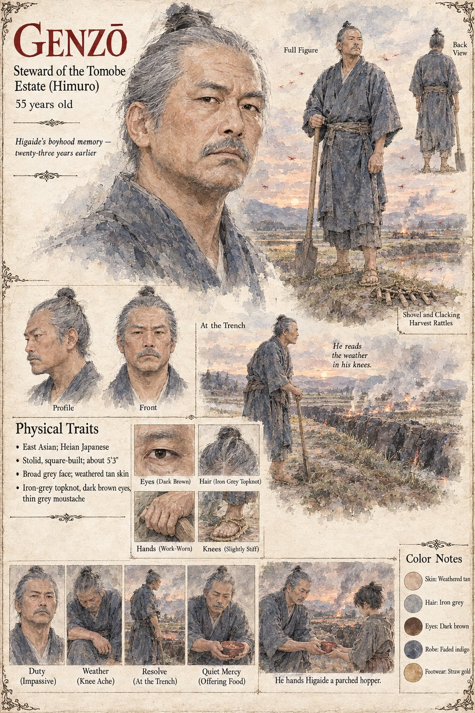

Genzō
Steward of the Tomobe estate at Himuro · seen only in Higaide's memory, twenty-three years back · 55 years old as remembered, by his sheet
A stolid grey man who reads the weather in his knees, steward of the Tomobe estate in the last season that Higaide's father held it in good standing, and he appears nowhere but in a memory. Higaide, eleven that summer, calls it up on the night of the twenty-sixth of Garren, at the smell of barley-chaff: the red-backed hoppers coming over the ridge from the dry country in an afternoon, turning the paddies the color of rust and setting the temple bell tolling of its own accord, which is the bell's way in that district of reporting a thing that no one can stop. The steward does not ring it. He puts every able hand in the district, a hundred and sixty men, women and boys, along the paddy dikes, and sets them to dig from the first hour of the afternoon until the last of the light a trench along the whole length of the eastern bank, a man's height deep and two paces wide, with the spoil thrown up on the outer side.
At dusk, when the hoppers settle in the cold, he sets fires along the lip of it, small fires of damp straw and green brush that give more smoke than flame, with a line of boys with drums and the great clacking wooden rattles of the harvest-dance behind them; in the red dark the hoppers come to the light as moths come, and go down into the trench in tens of thousands, and are covered over with earth in the morning by the same hundred and sixty hands. It is the sending-off, the villagers say, and they burn a straw figure at the boundary stone. Twenty-three years later it is what Higaide draws with a stick on the green at Vilarnau, and the word for it in that country is fossa. After the Turning he bows to a dead grasshopper and eats it, recalling that he ate one once, at twelve, parched in a pan with salt and a little plum vinegar, from Genzō's own hand, in the year the weir was lost. The manuscript gives him two adjectives, a post, a shovel's worth of orders and his knees. The sheet's fifty-five years, square five-foot-three build, broad impassive face, iron-grey topknot, thin grey moustache and faded indigo hemp robe are its own.